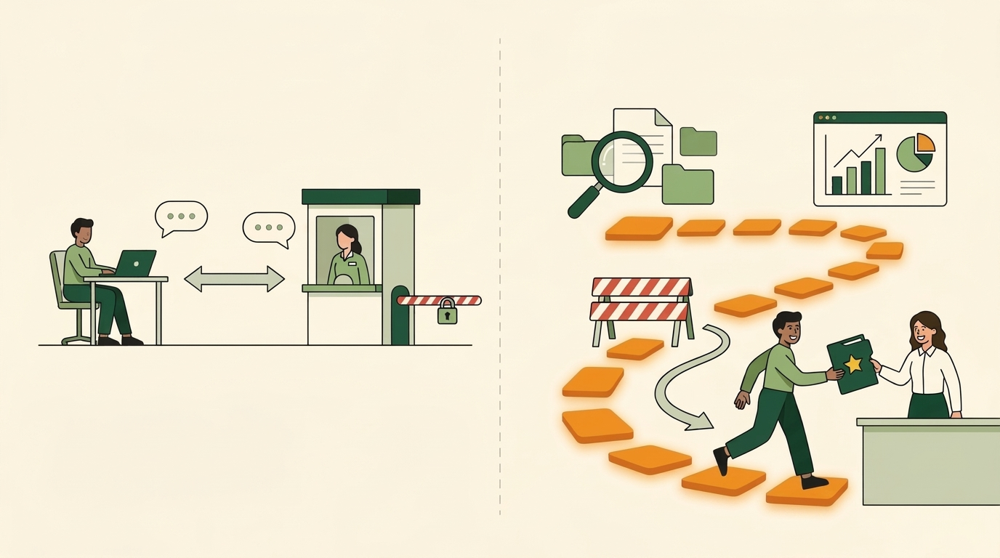

Mới đụng vào AI rất dễ thấy ngợp. Mở lên hỏi vài câu thì nó trả lời chung chung, nghe mọi người nói chuyện Context, Token, Credit, Prompt rồi Skill, Agent, Markdown, báo cáo HTML lại càng rối hơn.
Cuốn wiki này gom trọn những thứ thiết thực nhất cho người đi làm văn phòng — giải thích bằng chuyện đời thường kèm ảnh minh họa, đi theo đúng trình tự: hiểu gốc, thạo cách giao việc (Prompt), rồi mới nâng trình lên Skill, AI Agent và chiêu xuất Báo cáo HTML đẹp như thiết kế.
Đối tượng: Mọi nhân sự (không cần biết IT)Thời gian đọc trọn bộ: Khoảng 18–20 phútGồm: 9 chương + 4 ảnh minh họa + 18 mẫu việc + 7 câu tự kiểm tra
Nhiều người ngại AI vì cứ nghĩ nó là phần mềm kỹ thuật phức tạp. Thật ra, chỉ cần nhìn nó giống như cách mình làm việc với con người ngoài văn phòng là mọi chuyện vỡ ra ngay.
1.1 AI là gì? Ba chuyện dở khóc dở cười khi mới dùng
Cứ coi ChatGPT, Claude hay Gemini như một bạn thực tập sinh mới vào công ty. Kiến thức nền của bạn này rất rộng — sách báo, ngoại ngữ, kỹ năng văn phòng thứ gì cũng biết, lại gõ máy cực nhanh. Có điều bạn ấy mới chân ướt chân ráo tới, chưa biết công ty mình bán gì, khách hàng ra sao, cũng chẳng thể tự đoán được suy nghĩ trong đầu bạn.
Bởi vậy, ai mới dùng cũng hay va phải ba chuyện rất quen:
Nó không tự đoán được chuyện trong đầu bạn. Thử tưởng tượng bạn đi ngang bàn nhân viên mới, buông mỗi câu "viết giùm cái mail xin hoãn" rồi vào phòng họp. Người thật còn chẳng biết hoãn việc gì, gửi ai, lý do sao, huống chi AI — đó chính là lý do phải hiểu rõ Context (Ngữ cảnh) ở mục 1.2 ngay bên dưới.
Không biết nhưng rất hay đoán bừa. Hỏi tới chuyện nội bộ công ty hay một quy định mới toanh mà bạn quên gửi kèm tài liệu, AI hiếm khi chịu nói "tôi không biết". Thay vào đó, nó tự ghép mấy thông tin chung chung lại thành một câu nghe rất có lý — thậm chí tự bịa cả số liệu lẫn tên điều luật. Tin ngay mà không kiểm tra lại là rất dễ ăn lỗi.
Hay nịnh. Đưa một bản kế hoạch còn nhiều chỗ hở rồi hỏi "thấy ổn không?", thường nó sẽ khen trước cho vui lòng. Muốn nghe góp ý thật, bạn cứ dặn thẳng: đừng khen, hãy đóng vai một vị khách khó tính soi xem chỗ nào chưa ổn.
Vì sao cùng một câu hỏi, hôm nay nó viết kiểu này mai lại viết khác chút?
Chuyện hoàn toàn bình thường. Cũng giống như một người viết nháp hai lần sẽ chọn từ ngữ hơi khác nhau một chút, AI không trả lời theo khuôn đúc cứng nhắc. Nếu câu trả lời đầu tiên chưa ưng bụng, bạn cứ bấm nút tạo lại câu khác hoặc nhắn sửa tiếp ngay bên dưới.
1.2 Context (Ngữ cảnh) là gì? Thứ quyết định 80% độ thông minh của AI
Bạn sẽ nghe mọi người nhắc câu này rất nhiều: "Đưa thêm Context cho AI đi!". Nói bằng tiếng Việt bình thường, Context chính là tập hồ sơ đầu việc bạn đặt lên bàn cho bạn thực tập sinh đọc trước khi bắt tay làm.
Con người mình đi làm lâu năm có sẵn vô số thông tin ngầm trong đầu — biết sếp thích đọc ngắn gọn, biết khách này hay nhạy cảm về giá, biết tuần trước công ty mới đổi chính sách giao hàng. AI thì không ngồi họp chung với bạn nên nó hoàn toàn mù tịt những thông tin ngầm đó. Bạn không kể ra thì nó đành đoán mò, mà đoán mò thì chắc chắn trật lất!
Trái: Bàn trống không có hồ sơ (thiếu Context) — thực tập sinh ngồi chịu trận vì không biết làm kiểu gì. Phải: Đặt đủ hồ sơ sản phẩm, chân dung người đọc và bài mẫu lên bàn (đủ Context) — làm phát trúng ý ngay.
Khi thiếu Context
Bạn nhắn: "Viết tin nhắn nhắc khách gia hạn gói dịch vụ."
Kết quả nhận lại: Một bức thư sáo rỗng kiểu "Kính gửi Quý khách hàng, gói dịch vụ của Quý khách sắp hết hạn..." — đọc lên nghe như tin nhắn rác tự động.
Khi đưa đủ Context
Bạn nhắn thêm: "Khách là chị Mai (chủ tiệm bánh, dùng gói giao hàng của bên mình 1 năm rồi, hay ngại thủ tục rườm rà). Nhắn Zalo nhắc gói sắp hết ngày 30/10, báo gia hạn tuần này được tặng thêm 15 ngày miễn phí."
Kết quả nhận lại: Tin nhắn ấm áp, gọi đúng tình huống của khách, gửi thẳng không cần sửa nhiều.
Một bộ Context đầy đủ ngoài văn phòng chỉ xoay quanh đúng 4 mảnh ghép:
Mảnh ghép 1
Bạn là ai & công ty bán gì?
Làm phòng ban nào, bán sản phẩm tầm giá bao nhiêu, điểm khác biệt của bên mình so với chỗ khác là gì.
Mảnh ghép 2
Ai sẽ là người đọc sản phẩm này?
Sếp cần đọc nhanh trong 30 giây, khách hàng trung niên thích lễ phép, hay bạn trẻ Gen Z đọc lướt trên điện thoại?
Mảnh ghép 3
Đầu đuôi chuyện gì đang xảy ra?
Tại sao phải gửi email này, trước đó đã trao đổi gì rồi, mục tiêu cuối cùng bạn muốn người đọc làm gì sau khi xem xong.
Mảnh ghép 4
Tài liệu & bài mẫu đi kèm
Đính kèm file quy định, đoạn chat cũ của khách (đã xóa tên thật/SĐT), hoặc 1–2 bài viết cũ bạn thấy ưng ý để AI bám đúng giọng.
Mẹo cực nhàn: Chuẩn bị 1 tờ "Hồ sơ Ngữ cảnh" (Context Pack) dùng cả năm
Thay vì ngày nào mở AI lên cũng ngồi gõ lại "công ty tôi bán gì, khách hàng là ai...", bạn chỉ cần viết sẵn một file Notepad/Word dài nửa trang A4 theo khung dưới đây. Mỗi khi mở khung chat mới cho việc quan trọng, quăng file này lên đầu tiên là AI hiểu sạch bối cảnh trong 3 giây:
# HỒ SƠ NGỮ CẢNH CÔNG VIỆC CỦA TÔI
- Công ty & sản phẩm: [VD: Công ty chuyên bán hạt dinh dưỡng cao cấp cho dân văn phòng và quà biếu doanh nghiệp]
- Khách hàng chính: [VD: Nữ 25-40 tuổi quan tâm sức khỏe, thích tư vấn chân thành, ngại quảng cáo lố]
- Vị trí của tôi: [VD: Nhân viên Kinh doanh / Marketing / Hành chính Nhân sự]
- Giọng văn chuẩn của bên tôi: Thân thiện, ấm áp, rõ ràng, tuyệt đối không dùng chữ "siêu phẩm", "đỉnh cao", "cam kết 100%".
- Quy tắc trình bày: Đi thẳng vào việc, ưu tiên gạch đầu dòng hoặc bảng ngắn gọn dễ đọc trên điện thoại.
1.3 Token là gì? Phân biệt trí nhớ tạm và trí nhớ lâu dài
Nghe mọi người nhắc chữ Token, hiểu gọn thế này thôi: con người đếm chữ, còn AI đo độ dài bằng Token. Cứ tầm 1.000 Token thì ngang khoảng một trang rưỡi Word A4; tiếng Việt mình có dấu nên tốn nhỉnh hơn tiếng Anh một chút.
Thật ra bạn chẳng cần ngồi đếm Token làm gì. Thứ quan trọng nhất là hiểu cách AI giữ Context (ngữ cảnh) — ở đây có hai loại trí nhớ rất dễ bị nhầm lẫn:
Trí nhớ tạm trong một khung chat (cái bàn làm việc): Cứ hình dung mỗi khung chat là một cái bàn có diện tích cố định (người ta hay gọi là cửa sổ ngữ cảnh). Hồ sơ bạn gửi lên, câu bạn hỏi, câu nó trả lời — tất cả bày hết lên bàn đó. Mỗi lần bạn nhắn thêm một tin mới, AI phải liếc lại cả đống giấy trên bàn từ đầu buổi rồi mới viết tiếp. Nếu bạn chat miết cả tuần trong đúng một khung làm bàn đầy tràn, mấy tờ giấy đặt lên lúc đầu sẽ bị đẩy rớt mất — thế là AI quên sạch Context bạn dặn ban đầu! Chưa kể, sáng hỏi việc công ty, trưa hỏi món ăn, chiều quay lại làm Excel chung một khung thì ngữ cảnh bị loãng, AI làm việc kém sắc hẳn. Xong việc nào, bấm mở cuộc trò chuyện mới cho sạch bàn là xong.
Trí nhớ lâu dài (cài sẵn một lần): Là những thứ bạn lưu cố định vào phần cài đặt tài khoản (như Custom Instructions trên ChatGPT) hoặc tạo thành từng thư mục dự án riêng (như Projects trên Claude). Thông tin lưu ở đây thì dù bạn mở cuộc trò chuyện mới tinh, AI vẫn tự nhớ bạn làm bộ phận nào, sản phẩm công ty là gì và thích kiểu văn phong ra sao.
1.4 Credit, Lượt dùng — Và khi nào cần mua gói trả phí?
AI chạy tốn rất nhiều điện và máy chủ, nên hiếm chỗ nào cho xài thả ga không giới hạn. Dùng nhiều bạn sẽ đụng hai kiểu tính lượt khá quen ngoài đời:
Kiểu 1 là Credit — y hệt mua xu chơi game ở siêu thị. Hay gặp ở mấy trang vẽ ảnh, dựng video hay lồng tiếng như Midjourney, Kling, ElevenLabs. Tài khoản có sẵn một hũ xu; bấm tạo một bức ảnh hay vài giây video là trừ xu ngay, ra ảnh xấu hay sai ý cũng không lấy lại xu được. Kinh nghiệm xương máu: đừng bấm thử đại cho vui trên mấy app tính Credit. Cứ qua ChatGPT miễn phí chỉnh câu mô tả cho thật ưng bụng trước, chốt xong mới mang sang bấm tạo một phát ăn ngay.
Kiểu 2 là giới hạn lượt theo khung giờ — giống đi ăn buffet nhưng cứ 3 đến 5 tiếng chỉ được hỏi tối đa vài chục câu. ChatGPT và Claude tính kiểu này. Nhớ một điểm: nếu khung chat đang kẹp file nặng mà bạn cứ nhắn lắt nhắt từng câu, mỗi lần nhắn AI phải đọc lại cả cục cũ nên tụt lượt cực nhanh. Lỡ hết lượt bên này thì mở tab qua công cụ khác làm tiếp, vài tiếng sau quay lại là đầy.
Mức độ công việc
Dùng bản Miễn phí (0đ)
Khi nào mới nên mua gói Trả phí (~500k/tháng)?
Nhu cầu phổ thông Email, tìm ý tưởng, hàm Excel
Đáp ứng ngon lành 80–90% công việc hàng ngày nếu biết xoay vòng giữa ChatGPT, Claude và Gemini.
Chưa cần thiết — cứ xài bản miễn phí cho quen tay trước đã.
Dùng liên tục cả ngày Đọc nhiều file nặng, làm Content/Báo cáo dày
Sẽ hay gặp cảnh đang cao hứng làm việc thì bị báo hết lượt phải ngồi đợi hoặc bị tụt sang bản trả lời kém sắc hơn.
Nên đầu tư (ChatGPT Plus hoặc Claude Pro) khi bạn dùng trên 2 tiếng mỗi ngày, cần tải nhiều file Excel/PDF lớn và muốn đóng gói Projects/Skills dùng lại mỗi ngày.
1.5 Prompt là gì? & Bảng nhớ nhanh 5 từ nền tảng
Prompt nghe tên hơi Tây, thật ra nó chính là tờ giấy giao việc bạn đưa cho bạn thực tập sinh AI.
Nhiều người mới dùng hay chê AI viết nhạt, lý do lớn nhất nằm ở chỗ họ dùng AI y như dùng Google. Trên Google, bạn gõ mấy từ khóa rời rạc để tìm bài người khác đã viết sẵn. Còn với AI, bạn đang giao đề bài để nó tự ngồi viết mới từ trang giấy trắng. Giao qua loa vài chữ thì nó đành viết kiểu văn mẫu chung chung; ngược lại, bạn kèm đủ Context, nói rõ mục tiêu và dặn kỹ chỗ cần tránh thì kết quả sẽ khác hẳn.
(Còn hai khái niệm nâng cao hơn là Skill và AI Agent, chúng ta sẽ để dành học thật kỹ ở Chương 4 ngay sau khi bạn đã thạo cách viết Prompt nhé!)
Bảng nhớ nhanh 5 từ nền tảng trong 10 giây:
Từ hay gặp
Hình dung đời thường
Điều cần nhớ khi dùng
AI
Bạn thực tập sinh mới vào công ty
Giỏi kiến thức chung nhưng phải kiểm tra lại số liệu
Context
Tập hồ sơ đầu việc đặt lên bàn
Đưa đủ 4 mảnh ghép (hoặc 1 file Context Pack) thì AI mới làm trúng
Token
Mảnh chữ đo diện tích bàn làm việc
Xong việc là bấm New Chat để bàn khỏi tràn, Context khỏi loãng
Credit
Hũ xu chơi game siêu thị
Chỉnh câu chữ cho chuẩn rồi mới bấm tạo ảnh/video
Prompt
Tờ giấy giao việc
Không dùng như gõ Google; giao càng rõ làm càng hay
Chương 2
2. Thiết Lập Ngày Đầu Tiên & Quen Mấy Nút Bấm
Hiểu mấy khái niệm gốc rồi, giờ mở máy lên cài đặt một lần cho gọn gàng để về sau ngày nào dùng cũng nhàn.
2.1 Việc nào nên mở công cụ nào?
Mấy trang dưới đây đều có bản miễn phí dùng thoải mái. Vào web, bấm đăng nhập rồi chọn tài khoản Google cá nhân là vào ngay, khỏi phải nhớ thêm mật khẩu mới.
Miễn phí hoàn toàn. Bật nút DeepThink lên nó suy nghĩ từng bước rất kỹ, xử lý bài toán logic và kế hoạch phức tạp cực tốt.
Khi cần rà lỗi công thức khó, tính toán phương án hoặc dùng thoải mái không lo giới hạn lượt.
2.2 Ba việc nên cài đặt ngay trong 5 phút đầu tiên
Đừng vội mở lên chat luôn — bỏ đúng 5 phút làm ba thiết lập này, về sau ngày nào bạn cũng tiết kiệm được cả chục phút gõ lặp lại:
Tắt chế độ cho hệ thống lấy dữ liệu đi học: Vào ChatGPT, bấm ảnh đại diện tài khoản → Settings → Data Controls → gạt tắt dòng Improve the model for everyone. Làm một lần cho yên tâm khi xử lý việc công ty.
Cài sẵn "Hướng dẫn cá nhân" (Custom Instructions) để AI nhớ phong cách của bạn: Trên ChatGPT, bấm ảnh đại diện → chọn Customize ChatGPT. Ở ô hỏi muốn AI trả lời thế nào, bạn copy mẫu dưới đây dán vào rồi bấm Lưu. Từ hôm đó trở đi, mở khung chat mới nào nó cũng tự viết gọn và bớt sáo rỗng!
Gom việc lặp lại vào một thư mục riêng (Projects trên Claude / Gems trên Gemini): Nếu tuần nào bạn cũng viết bài cho đúng một sản phẩm, hãy tạo một thư mục riêng rồi tải sẵn tờ Context Pack và vài bài viết mẫu vào đó. Về sau mở ra chỉ cần nói ý chính là AI tự nhớ hết bối cảnh (cách đóng gói bài bản thành một bộ Skill sẽ có ở Chương 4 sau khi bạn quen tay viết Prompt).
Mẫu dán sẵn vào Custom Instructions (dùng 1 lần nhớ mãi)
Sao chép đoạn này, sửa lại đúng vị trí công việc của bạn rồi dán vào mục Customize ChatGPT:
- Công việc của tôi: Nhân sự phòng [Tên phòng ban] tại công ty kinh doanh [Lĩnh vực/Sản phẩm].
- Luôn đi thẳng vào câu trả lời, bỏ mấy câu chào hỏi hay khen ngợi xã giao ở đầu.
- Viết tiếng Việt tự nhiên như người thật nói chuyện, tuyệt đối tránh mấy cụm từ sáo rỗng kiểu dịch máy.
- Khi thông tin tôi đưa chưa đủ để làm tốt, hãy hỏi lại tôi 2-3 câu trước khi viết.
- Nếu không chắc chắn về số liệu hoặc thông tin nào, nói thẳng là không biết chứ đừng tự đoán.
2.3 Sáu nút bấm ai cũng nên quen tay & Mẹo dùng trên điện thoại
Nút New Chat (góc trên bên trái): Xong việc này qua việc khác là bấm ngay cho sạch bàn làm việc, khỏi lẫn ngữ cảnh cũ mà cũng đỡ tốn lượt.
Nút Kẹp ghim hoặc dấu cộng (trong ô gõ chữ): Có file Word, PDF, Excel hay ảnh chụp màn hình thì tải thẳng lên hỏi luôn, đừng gõ tay lại cho khổ.
Nút Cây bút (rê chuột lên câu bạn vừa gửi): Thấy AI hiểu sai ý ngay từ đầu thì bấm thẳng cây bút sửa câu hỏi gốc rồi gửi lại, đừng chat cãi qua cãi lại 4–5 câu làm rối khung chat.
Nút Quả địa cầu / Search (dưới ô gõ chữ trên ChatGPT): Cần hỏi tin tức hôm nay, giá cả thị trường hay quy định mới ra thì bật nút này lên để nó chạy ra ngoài mạng tìm.
Nút Copy hai tờ giấy (dưới câu trả lời của AI): Bấm nút này để chép sạch bảng biểu, chữ in đậm; tự bôi đen bằng chuột dán sang Word hay bị dính nền xám hoặc dấu sao.
Chế độ Temporary Chat (góc trên màn hình): Lúc xử lý giấy tờ nội bộ, bật nút ẩn danh này lên — đóng tab là mất sạch, không lưu vào lịch sử.
Mẹo hay trên điện thoại ít người để ý: Cài app ChatGPT hoặc Gemini trên điện thoại, bạn có thể bấm nút Micro / Giọng nói để nói chuyện trực tiếp như gọi điện (rất hợp lúc đang di chuyển muốn ghi lại ý tưởng hoặc luyện nghe nói tiếng Anh 10 phút mỗi ngày), hoặc bấm Camera chụp thẳng tờ hóa đơn, trang sách giấy hỏi trực tiếp luôn.
Chương 3 • Học Prompt
3. Nói Sao Cho AI Làm Trúng Ý & Cách Dẫn Dắt Nhiều Vòng
Bí quyết của người dùng AI giỏi không nằm ở việc thuộc lòng câu thần chú phức tạp, mà nằm ở hai thứ: đặt đề bài rõ ngay từ đầu và biết cách sửa bài theo từng vòng.
3.1 Công thức 3 Bước + 1 Mẫu
Bước 1: Cho AI vai trò và kể rõ Context
Nói rõ AI đóng vai ai, viết cho ai đọc và đầu đuôi sự việc thế nào. Ví dụ: đóng vai trưởng nhóm CSKH, cần nhắn tin cho chị Lan (khách quen mua nhiều lần) vì đơn hàng bị giao trễ hai ngày.
Bước 2: Nói thẳng việc cần làm và chỗ CẤM làm
Nêu rõ mục tiêu và chặn trước mấy lỗi AI hay vướng. Ví dụ: xin lỗi thẳng thắn, báo sẽ gửi hỏa tốc trong chiều nay kèm mã giảm 15%, tuyệt đối không đổ lỗi cho shipper và bỏ mấy câu khách sáo sáo rỗng.
Bước 3: Chốt độ dài và cách trình bày
Đừng để nó tự đoán độ dài rồi viết cho cả trang giấy. Dặn thẳng: viết ngắn dưới 120 chữ, chia 2 đoạn dễ đọc trên điện thoại, hoặc kẻ thành bảng 3 cột cho dễ nhìn.
Thêm 1 mẫu có sẵn (cực kỳ ăn tiền)
Có email hay bài đăng cũ nào bạn từng viết rất ưng ý thì dán kèm vào cuối câu lệnh, dặn nó học đúng cách xưng hô và nhịp ngắt câu của mẫu đó. Đưa 1 bài mẫu còn hiệu quả hơn ngồi giải thích 10 dòng về văn phong.
3.2 Đừng cầu toàn ở câu đầu — Bí quyết "nói chuyện nhiều vòng"
Rất nhiều người cố gõ một câu lệnh dài dằng dặc rồi mong AI trả ra bản hoàn chỉnh ngay trong một lần. Thật ra làm việc với AI giống hệt làm việc với đồng nghiệp: với những việc lớn, hãy chia làm 2–3 vòng trao đổi ngắn. Nhìn đoạn hội thoại mẫu dưới đây bạn sẽ thấy cách làm này nhẹ nhàng và trúng ý hơn hẳn:
Ví dụ thật: Lên bài thông báo tăng nhẹ giá sản phẩm từ tháng sauQuy trình 3 vòng
Vòng 1 — Bạn đưa bối cảnh & xin dàn ý trước
Từ tháng sau bên mình buộc phải tăng giá hũ hạt dinh dưỡng thêm 10.000đ do nguyên liệu nhập khẩu tăng mạnh. Tôi cần viết thông báo gửi khách quen trên Zalo sao cho khách hiểu và thông cảm, không thấy bị hụt hẫng. Khoan viết bài vội, gạch giúp tôi 4 ý chính cần có trước đã.
AI gợi ý khung 4 ý
1. Cảm ơn khách đã ủng hộ thời gian qua. 2. Chia sẻ thẳng nguyên nhân giá nguyên liệu tăng nhưng công ty vẫn giữ nguyên chất lượng, không bớt trọng lượng. 3. Thông báo mức giá mới và ngày áp dụng rõ ràng. 4. Ưu đãi riêng cho khách cũ: giữ nguyên giá cũ trong 7 ngày tới nếu đặt trước.
Vòng 2 — Bạn chốt ý & yêu cầu viết thành bài
Ý số 4 rất ổn, cho tôi áp dụng giữ giá cũ tới hết Chủ nhật tuần này. Giờ viết thành tin nhắn Zalo hoàn chỉnh dựa trên 4 ý đó nhé. Giọng chân thành, gần gũi như chủ tiệm nói với khách quen, dưới 140 chữ, đừng viết kiểu thông báo công văn.
AI viết bản nháp đầu tiên (còn hơi cứng câu mở đầu)
"Trân trọng tri ân quý khách hàng đã đồng hành cùng tiệm thời gian qua! Từ ngày 01/11, do giá hạt nhập khẩu tăng mạnh nên tiệm xin phép điều chỉnh nhẹ thêm 10.000đ/hũ để giữ nguyên chất lượng hạt loại 1, tuyệt đối không giảm trọng lượng. Riêng khách quen đặt trước hết Chủ nhật tuần này, tiệm vẫn giữ nguyên giá cũ nhé ạ!"
Vòng 3 — Bạn tinh chỉnh chi tiết cuối
Ý thì đúng hết rồi, chỉ có câu mở đầu "Trân trọng tri ân quý khách hàng" nghe hơi giống văn mẫu. Sửa lại câu đầu cho thân mật, tự nhiên như người thật nhắn Zalo nhé.
Bản chốt cuối — Gửi được ngay
"Chào chị, cảm ơn chị thời gian qua đã luôn tin chọn hạt dinh dưỡng bên tiệm nhé! Tiệm nhắn báo trước một chút: từ 01/11, do giá hạt nhập khẩu tăng mạnh nên tiệm buộc phải nhích nhẹ thêm 10.000đ/hũ để giữ nguyên chất lượng hạt loại 1, không bớt trọng lượng. Riêng khách quen nhà mình, nếu chị cần lấy thêm thì nhắn trước Chủ nhật tuần này tiệm vẫn giữ nguyên giá cũ nha!"
3.3 So sánh 3 tình huống thực tế: Hỏi vội vs Hỏi kỹ
Tình huống 1 • Văn phòng
Xin lùi hạn nộp báo cáo cho cấp trên
Gõ vội cho xong
"Viết email xin hoãn deadline báo cáo gửi sếp."
Lý do dở: AI chẳng biết bạn làm mảng nào, lý do hoãn có chính đáng không nên viết ra bức thư chung chung, đọc lên có cảm giác làm việc thiếu trách nhiệm.
Gõ đủ ý theo 3 Bước
"Bạn là nhân viên làm việc cẩn trọng. Tôi cần viết email gửi Trưởng phòng xin lùi hạn nộp báo cáo doanh số tháng từ thứ 4 sang sáng thứ 6.
Lý do: Chi nhánh vừa báo có vài hóa đơn hoàn trả phát sinh cuối tháng nên cần đối chiếu lại cho khớp 100% trước khi nộp.
Yêu cầu: Giữ thái độ cầu thị, chủ động gửi trước bản số liệu tạm chiều nay, viết dưới 120 chữ, đi thẳng vào vấn đề."
Ăn tiền ở chỗ: Có lý do rõ ràng, có phương án tạm thời và chốt độ dài — chỉ việc điền tên là gửi được ngay.
Tình huống 2 • Marketing
Viết bài bán bình giữ nhiệt trên Facebook
Gõ vội cho xong
"Viết bài quảng cáo bán bình giữ nhiệt."
Lý do dở: Lại ra mấy câu nghe muốn lướt ngay kiểu "Bạn đang tìm kiếm một siêu phẩm bình giữ nhiệt hoàn hảo?..."
Gõ đủ ý theo 3 Bước
"Bạn là người viết bài bán hàng rất đời thường, không nói quá sự thật. Viết bài Facebook bán bình giữ nhiệt inox 500ml giá 250k cho dân văn phòng ngồi máy lạnh hay lười đứng dậy rót nước.
Nhấn đúng 2 điểm: giữ đá lạnh 12 tiếng không bị đọng nước làm ướt bàn phím, có ống hút tiện uống khi đang gõ máy.
Dưới 150 chữ, câu đầu đánh trúng tật lười uống nước ở văn phòng, cấm dùng chữ 'siêu phẩm', 'đỉnh cao'."
Ăn tiền ở chỗ: Đánh trúng hoàn cảnh thật ở công sở và chặn sạch từ quảng cáo sáo rỗng.
Tình huống 3 • Chăm sóc khách hàng
Xoa dịu khách VIP bị giao hàng chậm
Gõ vội cho xong
"Viết tin nhắn xin lỗi khách vì giao hàng chậm."
Lý do dở: Giọng lạnh băng, lại hay tự động viết câu đổ lỗi cho bên giao hàng khiến khách đọc càng bực hơn.
Gõ đủ ý theo 3 Bước
"Bạn là trưởng nhóm CSKH rất tinh tế. Chị Lan (khách quen mua 5 lần) vừa nhắn phàn nàn đơn đặt thứ 2 mà thứ 5 chưa tới, đang cần đi tặng.
Viết tin nhắn Zalo xin lỗi chị Lan: nhận trách nhiệm thẳng về phía shop (tuyệt đối không đổ lỗi shipper), báo rõ đã đặt giao hỏa tốc đơn mới trước 16h chiều nay, và tặng riêng mã giảm 15% cho đơn sau. Giọng ấm áp như người nhà, dưới 110 chữ."
Ăn tiền ở chỗ: Thể hiện sự tôn trọng, giải quyết thẳng nỗi lo của khách và giữ trọn thiện cảm.
3.4 Năm lỗi người mới hay vướng (và cách sửa ngay)
Hay làm sai
Nhồi 5 yêu cầu khác nhau vào chung một tin nhắn dài lê thê (vừa bảo tóm tắt, vừa bảo dịch, vừa bảo lập kế hoạch, vừa bảo viết 10 bài đăng).
Nên làm thế này
Tách từng bước ra: vòng 1 chốt tóm tắt/dàn ý xong mới sang vòng 2 bảo viết chi tiết từng bài. AI làm từng bước kỹ và ít bỏ sót hơn nhiều.
Hay làm sai
Thấy AI hiểu nhầm ngay câu đầu tiên liền gõ tiếp 4–5 tin nhắn cãi qua cãi lại để giải thích.
Nên làm thế này
Bấm biểu tượng Cây bút (Edit) ngay ở câu hỏi đầu tiên, sửa lại cho rõ ý rồi gửi lại. Khung chat sạch tinh, AI làm lại chuẩn hơn hẳn.
Hay làm sai
Quên nói rõ đối tượng người đọc, khiến bài viết cho Gen Z trên TikTok nghe nghiêm túc như công văn, còn báo cáo gửi sếp lại dài dòng.
Nên làm thế này
Luôn thêm đúng một cụm ngắn: "Gửi cho sếp đọc nhanh trong 30 giây" hoặc "Cho bạn trẻ 20–25 tuổi đọc trên điện thoại".
Hay làm sai
Hỏi một câu rồi copy y nguyên cả chữ lẫn ký hiệu dấu sao ** dán thẳng vào Zalo hay Email gửi đi.
Nên làm thế này
Luôn đọc lại 1 lần bằng mắt, dùng nút Copy chuẩn của AI và chỉnh lại cách xưng hô cho khớp với thực tế của bạn.
Hay làm sai
Dùng chung một khung chat kéo dài từ tuần này sang tuần khác cho đủ mọi việc linh tinh.
Nên làm thế này
Hễ chuyển chủ đề là bấm New Chat để làm sạch "chiếc bàn làm việc", AI vừa thông minh hơn vừa đỡ tụt lượt.
3.5 Bốn câu "chữa cháy" khi AI trả lời chưa ưng
Khi chính bạn cũng đang bí, chưa biết mô tả sao cho đủ: Cứ nói đại khái việc bạn cần rồi chốt thêm: "Đừng viết vội, hãy hỏi lại tôi 3–4 câu ngắn gọn để hiểu rõ ý tôi muốn nhất nhé."
Khi thấy nó viết dài lê thê và sáo rỗng: Nhắn thẳng: "Cắt gọn lại còn một nửa, bỏ hết lời chào rườm rà, viết tự nhiên như người nói chuyện bình thường."
Khi gặp việc khó như tính chi phí hay so sánh phương án: Dặn thêm ở cuối: "Cứ phân tích từng bước một cho kỹ rồi hãy chốt kết quả."
Khi muốn nhờ nó soi lỗi kế hoạch của mình: Đừng hỏi có hay không, hãy nhắn: "Cấm khen! Đóng vai một vị khách cực khó tính, chỉ ra 5 chỗ dở nhất trong kế hoạch này và gợi ý cách sửa."
Chương 4 • Lên Trình Sau Prompt
4. Hiểu Sâu Về Skill, Đồ Nghề (Tools) & AI Agent
Khi đã quen viết Prompt giao từng việc lẻ rồi, bạn sẽ gặp câu hỏi tiếp theo: "Sao tuần nào mình cũng phải copy lại nửa trang hướng dẫn y chang nhau, với lại có cách nào giao 1 câu để AI tự chạy trọn gói luôn không?" — Câu trả lời nằm ở đúng hai khái niệm dưới đây.
4.1 Skill và Đồ nghề (Tools) — Đóng gói Prompt xịn thành "Sổ tay bấm phát chạy"
Hãy quay lại câu chuyện bạn thực tập sinh AI. Ban đầu cậu ta ngồi trong một căn phòng đóng kín: viết lách hay dịch thuật thì giỏi, nhưng không có mạng Internet để xem giá hôm nay, không có máy tính để cộng trừ bảng Excel năm nghìn dòng chính xác từng đồng.
Thế là người ta đưa thêm Đồ nghề (Tools) vào phòng: nối mạng Internet để tự tìm tin tức, lắp công cụ chạy bảng tính để cộng trừ không sai một xu, mở mắt cho nhìn ảnh chụp màn hình và đọc file PDF.
Còn Skill thì đi thêm một bước nữa. Trong công ty luôn có những việc lặp đi lặp lại theo đúng một quy chuẩn — như lọc hồ sơ ứng viên, soi rủi ro hợp đồng, hay viết bài Facebook đúng giọng thương hiệu. Nếu mỗi lần làm bạn lại phải viết lại Prompt 20 dòng kèm 3 file tài liệu thì quá mất công. Người ta mới gom sẵn toàn bộ hướng dẫn chuẩn + tài liệu mẫu + đồ nghề cần dùng vào chung một "cuốn sổ tay nghề nghiệp" — gọi là Skill (ngoài đời thực bạn sẽ thấy các hãng đặt tên khác nhau một chút: trên Claude gọi là Skills / Projects, trên ChatGPT gọi là Custom GPTs, trên Gemini gọi là Gems, nhưng bản chất là một!).
Cấu tạo một bộ Skill: Bên trái là cuốn sổ tay quy trình bạn chốt sẵn 1 lần; bên phải là hộp đồ nghề (lên mạng, chạy Excel, soi PDF, kiểm tra theo checklist) tự động kích hoạt khi cần.
Một bộ Skill tốt chỉ gồm đúng 3 mảnh đơn giản (ai cũng tự làm được, không cần biết code):
Phần 1 • Sổ tay quy tắc
Prompt chuẩn đã thử kỹ
Chính là câu lệnh 3 Bước bạn học ở Chương 3 sau khi đã sửa đi sửa lại thấy AI làm rất ưng bụng. Giờ lưu cố định lại thay vì gõ mới mỗi lần.
Phần 2 • Tủ tài liệu gốc
Context & Bài mẫu đi kèm
Đính sẵn tờ Hồ sơ Ngữ cảnh công ty, bảng giá sản phẩm, biểu mẫu báo cáo hoặc 3 bài viết cũ ưng ý nhất để AI luôn làm ra đúng gu của bạn.
Phần 3 • Đồ nghề bật sẵn
Tools hỗ trợ làm việc thật
Tích chọn đồ nghề cần cho việc đó: bật Tìm web nếu là Skill nghiên cứu thị trường; bật Xử lý file nếu là Skill soi hợp đồng hay tính Excel.
3 bộ Skill văn phòng dùng sướng nhất bạn có thể tự tạo trong 10 phút:
Skill "Lọc CV chuẩn phòng ban": Lưu sẵn bảng tiêu chí tuyển dụng của công ty + thang chấm 100 điểm + quy tắc xuất bảng 4 cột. Từ sau HR chỉ việc quăng file CV (đã xóa SĐT) vào, 10 giây sau có ngay bảng chấm điểm và câu hỏi phỏng vấn.
Skill "Viết bài đúng giọng thương hiệu": Lưu sẵn mô tả sản phẩm, chân dung khách hàng, 5 bài đăng cũ có tương tác cao nhất và danh sách từ cấm dùng. Marketing chỉ cần gõ 1 dòng chủ đề là ra bài sát 90% phong cách công ty.
Skill "Soi lỗi hợp đồng & báo giá": Lưu sẵn 10 điều khoản công ty hay bị đối tác cài bẫy (phạt chậm tiến độ, điều kiện bảo hành, công nợ). Mỗi khi nhận hợp đồng mới, ném PDF vào là nó tự gạch đỏ từng điều khoản bất lợi.
Cách tự tạo bộ Skill đầu tiên trong 3 bước (không cần biết code):
Bước 1 — Mở mục tạo trợ lý riêng: Trên Claude chọn Projects → New Project; trên Gemini chọn Gem manager → New Gem (miễn phí cũng tạo được!); trên ChatGPT chọn Explore GPTs → Create.
Bước 2 — Dán bản quy tắc chuẩn vào ô Instructions (Hướng dẫn): Lấy đúng mẫu khung bên dưới sửa theo đầu việc của bạn rồi dán vào.
Bước 3 — Tải sẵn 2–3 file gốc vào mục Knowledge (Tài liệu): Đính tờ Context Pack + 2 bài mẫu chuẩn của công ty rồi bấm Lưu. Xong! Từ hôm đó mở Skill ra chỉ cần đưa đề bài ngắn là nó chạy đúng quy trình.
Mẫu khung hướng dẫn để dán khi tạo Skill (Copy & điền phần ngoặc vuông)
# Vai trò & Nhiệm vụ của Skill
Bạn là trợ lý chuyên xử lý đúng 1 việc: [VD: Lọc hồ sơ ứng viên / Viết bài Facebook cho thương hiệu X].
# Quy trình bắt buộc làm theo từng bước
1. Luôn đọc kỹ tài liệu gốc tôi đã tải sẵn trong thư mục (bảng giá, tiêu chí, bài mẫu) trước khi trả lời.
2. Nếu dữ liệu tôi gửi lên bị thiếu thông tin quan trọng, hỏi lại tôi tối đa 2 câu ngắn rồi mới làm.
3. Xuất kết quả theo đúng cấu trúc: [VD: Bảng 4 cột / Bài ngắn dưới 150 chữ gồm 3 đoạn].
# Quy tắc cấm làm
- Không dùng lời lẽ sáo rỗng kiểu dịch máy.
- Không tự đoán số liệu không có trong tài liệu gốc.
4.2 AI Agent là gì? Từ "người trực quầy" sang "trợ lý tự chạy từ A đến Z"
Nếu Prompt là một tờ giấy giao việc đơn lẻ, Skill là cuốn sổ tay cho một việc lặp lại, thì AI Agent chính là lúc bạn giao hẳn cả một đích đến lớn rồi để trợ lý tự lên kế hoạch, tự dùng đồ nghề chạy từng bước và tự xoay xở khi gặp trục trặc!

Trái (Chatbot thường): Hỏi một câu đáp một câu, đụng rào chắn là dừng luôn. Phải (AI Agent): Tự tìm tài liệu, phân tích bảng biểu, gặp đường cụt tự đi đường vòng để hoàn thành báo cáo trao tận tay bạn.
Cơ chế 5 bước tự chạy của một AI Agent ngoài đời thật:
Bước 1
Nhận đích đến cuối cùng:Bạn giao mục tiêu rõ ràng, ví dụ: "Khảo sát giá bán lẻ của 3 đối thủ lớn nhất tuần này".
Bước 2
Tự chia nhỏ đầu việc:Agent tự lên danh sách các bước cần làm mà không đợi bạn phải ngồi nhắc từng câu.
Bước 3
Tự mở đồ nghề xử lý:Tự lên mạng mở từng trang web, đọc bảng giá, mở bảng tính gom lại số liệu.
Bước 4
Gặp lỗi tự tìm đường vòng:Thấy trang web đối thủ A bị lỗi không vào được, nó tự chuyển qua Fanpage hay sàn TMĐT lấy cho đủ thông tin.
Bước 5
Tự rà lại & nộp báo cáo:Tự kiểm tra xem đã đủ 3 bên và kèm đường link nguồn chưa rồi mới nộp bảng so sánh hoàn chỉnh cho bạn.
So sánh 3 cấp độ để biết khi nào dùng cái nào:
Cấp độ
Ví dụ đời thường
Khi nào nên dùng?
1. Chatbot + Prompt
Nhắn đồng nghiệp làm nhanh một việc lẻ
Việc phát sinh ngẫu nhiên trong ngày: viết 1 email, dịch 1 đoạn văn, hỏi 1 hàm Excel.
2. Skill (Projects / GPTs / Gems)
Đưa cuốn sổ tay quy trình + tủ tài liệu mẫu
Việc lặp đi lặp lại mỗi tuần theo đúng 1 chuẩn cố định: lọc CV, viết bài thương hiệu, soi hợp đồng.
3. AI Agent
Giao hẳn dự án trọn gói cho trợ lý tự chạy
Việc nhiều bước tốn hàng giờ: nghiên cứu thị trường đọc 20–30 nguồn (như tính năng Deep Research trên ChatGPT, Gemini, Perplexity), phân tích nhiều file chéo nhau, hoặc tự động phân loại báo cáo.
Ba rào chắn an toàn bắt buộc khi giao việc cho AI Agent:
Agent rất chủ động, nhưng chính vì nó tự chạy nhiều bước nên nếu giao mơ hồ, nó có thể đi sai hướng hoặc làm quá quyền hạn. Luôn nhớ 3 chốt chặn này:
1. Chốt rõ đích đến & phạm vi
Đừng nói "tìm hiểu thị trường giúp tôi". Hãy nói rõ: "Chỉ tìm 3 đối thủ tại Việt Nam trong năm nay, tập trung vào giá bán lẻ và chương trình khuyến mãi".
2. Chỉ cho làm nháp, KHÔNG cho tự gửi
Với những việc đụng ra bên ngoài (gửi email khách hàng, đăng bài lên page, sửa dữ liệu gốc), luôn cài chế độ chỉ lưu bản nháp chờ người duyệt.
3. Yêu cầu nộp kèm nguồn kiểm chứng
Luôn dặn Agent ghi rõ từng con số lấy từ đường link nào hoặc trang mấy trong file gốc để bạn soát lại trong 1 phút trước khi sử dụng.
Thử trải nghiệm AI Agent ngay hôm nay (bật nút Deep Research trên Gemini / ChatGPT / Perplexity)
Mở Gemini hoặc ChatGPT, bấm bật chế độ Deep Research (Nghiên cứu sâu) rồi dán đề bài dưới đây — bạn sẽ thấy Agent tự đi đọc hàng chục nguồn web trong vài phút và trả về bản phân tích kèm đầy đủ link dẫn chứng:
Hãy khảo sát giúp tôi thị trường [Tên sản phẩm, VD: hộp quà hạt dinh dưỡng Tết] tại Việt Nam trong năm nay.
Phạm vi cần làm rõ:
1. Liệt kê 3–4 thương hiệu đang bán chạy nhất kèm khoảng giá bán lẻ và điểm mạnh bao bì của từng bên.
2. Tổng hợp các phản hồi khen / chê phổ biến nhất của khách mua hàng trên sàn thương mại điện tử.
3. Kẻ bảng so sánh ngắn gọn và gợi ý 3 khoảng trống thị trường công ty tôi có thể khai thác.
Lưu ý: Mọi mức giá và thông tin đều phải gắn kèm đường link nguồn gốc để tôi kiểm tra lại.
Chương 5 • Dùng AI Thông Minh
5. Mẹo Dùng Markdown & Tự Tạo Báo Cáo HTML Đẹp Như Thiết Kế
Đa số mọi người chỉ dùng AI để chép mấy đoạn chữ thô. Nếu biết thêm đúng 2 chiêu cực nhẹ nhàng dưới đây — hiểu 5 ký hiệu Markdown và nhờ AI xuất thẳng Báo cáo HTML — chất lượng bài nộp của bạn sẽ vượt hẳn mặt bằng chung mà không cần biết một dòng code nào.
5.1 Markdown là gì? Biết đúng 5 ký hiệu để sai AI chuẩn hơn gấp đôi
Chắc bạn từng thắc mắc: sao cứ copy chữ từ AI ra chỗ khác là lại thấy lòi ra mấy ký hiệu lạ như #, **chữ đậm** hay dấu gạch đứng | |? Đó gọi là Markdown.
Đừng thấy tên tiếng Anh mà ngại — Markdown không phải lập trình! Nó chỉ là mấy ký hiệu siêu đơn giản giống như lúc bạn lấy bút đánh dấu tiêu đề, gạch đầu dòng hay kẻ khung trên tờ giấy nháp vậy thôi. AI đọc và viết theo Markdown tự nhiên như hơi thở.
Khi bạn gõ thô bằng Markdown
# Báo cáo nhanh Thứ 6
**Tóm tắt:** Tuần này vượt chỉ tiêu 12%.
- Kênh bán tốt nhất: Shopee
- Điểm cần xử lý: Giao hàng chậm ở khu vực miền Trung
| Hạng mục | Thực tế | Mục tiêu |
| --- | --- | --- |
| Doanh số | 350 triệu | 310 triệu |
| Đơn mới | 420 đơn | 380 đơn |
Khi hiển thị gọn đẹp (AI / Notion / Docs)
Báo cáo nhanh Thứ 6
Tóm tắt: Tuần này vượt chỉ tiêu 12%.
Kênh bán tốt nhất: Shopee
Điểm cần xử lý: Giao hàng chậm ở khu vực miền Trung
Hạng mục
Thực tế
Mục tiêu
Doanh số
350 triệu
310 triệu
Đơn mới
420 đơn
380 đơn
Chỉ cần nhớ đúng 5 ký hiệu này — và 3 cách dùng cực thông minh:
Ký hiệu
Ý nghĩa
Cách áp dụng khôn ngoan khi làm việc với AI
# hoặc ##
Tiêu đề lớn / mục nhỏ
Khi viết Prompt dài, chia rõ từng phần # Bối cảnh, # Yêu cầu, # Điều cấm — AI đọc vào không bao giờ bị sót ý!
**chữ**
In đậm nhấn mạnh
Dùng để bọc những điều quan trọng nhất bạn muốn AI chú ý kỹ, ví dụ **tuyệt đối dưới 120 chữ**.
-
Gạch đầu dòng
Liệt kê ý thô cực nhanh thay vì viết thành một khối chữ dính chùm khó đọc.
""" ... """
Đóng khung tài liệu gốc
Bọc đoạn email khách gửi hoặc ghi chú cuộc họp vào trong cặp 3 dấu ngoặc kép để AI tách bạch đâu là lệnh của bạn, đâu là dữ liệu cần xử lý.
| A | B |
Kẻ bảng chia cột
Khi muốn AI trả ra bảng chuẩn để dán sang Excel, cứ gõ luôn khung cột mẫu | STT | Việc cần làm | Người làm | Hạn chót |.
Mẹo copy từ AI sang Word / Google Docs / Email mà KHÔNG bị dính dấu ** xấu xí:
Luôn bấm nút Copy (biểu tượng hai tờ giấy) ở góc dưới câu trả lời của AI thay vì tự lấy chuột bôi đen. Nếu dùng Google Docs, mở menu Công cụ (Tools) → Tùy chọn (Preferences) → tick vào ô Tự động phát hiện Markdown (hoặc chuột phải chọn Dán từ Markdown) là tiêu đề, chữ đậm và bảng tự nhảy đẹp y như tự gõ tay!
5.2 Tự tạo Báo cáo HTML đẹp như thuê thiết kế trong 30 giây (Kèm ví dụ sống)
Đây là chiêu làm việc khiến sếp và đối tác bất ngờ nhất mà gần như rất ít nhân sự văn phòng biết tới. Bình thường, cuối tuần hay cuối tháng bạn hay gửi báo cáo kiểu: một đoạn chữ dài dằng dặc trong Zalo, hoặc file Excel dày đặc con số nhìn hoa cả mắt.
Thay vì làm vậy, bạn hoàn toàn có thể đưa bảng số liệu (đã ẩn danh) cho Claude hoặc ChatGPT rồi bảo: "Hãy xuất giúp tôi thành 1 file báo cáo HTML đẹp mắt, có thẻ số liệu nổi bật và biểu đồ màu sắc để tôi mở trên trình duyệt hoặc in ra PDF." Bạn không cần hiểu một chữ code nào — AI tự thiết kế từ đầu đến cuối, còn bạn chỉ việc xem và gửi!
Từ đống ghi chú thô và bảng số liệu nhàm chán bên trái, chỉ với 1 câu lệnh, AI dựng ngay thành trang báo cáo trực quan có thẻ KPI, biểu đồ màu và xuất file PDF gọn gàng.
Xem ngay Ví dụ thật: Từ 5 dòng số liệu thô biến thành trang báo cáo hoàn chỉnh
Bạn chỉ cần đưa đúng 5 dòng ghi chú thô dưới đây kèm câu lệnh mẫu:
Đầu vào bạn dán cho AI (chỉ 5 dòng thô)
- Tháng 10 đạt 112% mục tiêu: Doanh thu 1,42 tỷ (+18% vs tháng 9), 1.280 đơn (+12%), khách cũ mua lại 34% (+5% nhờ Zalo).
- Tỷ trọng kênh: Shopee Mall 48%, Zalo/Khách quen 27%, Facebook Fanpage 16%, Đại lý/Quà tặng 9%.
- Điểm sáng: Combo quà tặng cuối tháng nâng giá trị đơn từ 920k lên 1,11 triệu; tỷ lệ hoàn đơn dưới 1,8%.
- Việc cần xử lý tuần tới: 1) Điều chuyển gấp 2 mã bán chạy về kho miền Trung; 2) Nhắn chăm sóc khách cũ dịp lễ giữa tháng 11.
Và đây là kết quả AI tự dựng ra — bạn có thể bấm 2 nút trên thanh xanh để mở xem bản đầy đủ hoặc tải file .html về máy mở thử bằng Chrome:
Ví dụ sống: bao-cao-kinh-doanh-thang-10.html
Báo Cáo Kết Quả Kinh Doanh — Tháng 10
Phòng Kinh doanh • Tổng hợp nhanh gửi Ban Giám đốc (Số liệu minh họa)
Đạt 112% mục tiêu tháng
Tổng doanh thu
1,42 tỷ
+18% so với tháng 9
Đơn hàng hoàn tất
1.280 đơn
+12% so với tháng 9
Khách cũ mua lại
34%
+5% nhờ chăm sóc Zalo
Tỷ trọng doanh thu theo từng kênh bán
Shopee Mall
48%
Zalo / Khách quen
27%
Facebook Fanpage
16%
Đại lý / Quà tặng
9%
Điểm sáng nổi bật tháng này
Combo quà tặng cuối tháng giúp giá trị trung bình mỗi đơn tăng từ 920k lên 1,11 triệu; tỷ lệ hoàn đơn giảm xuống dưới 1,8%.
2 việc cần xử lý ngay tuần tới
1. Kho miền Trung thiếu hàng 2 mã bán chạy cần điều chuyển gấp. 2. Đẩy thêm 1 chiến dịch nhắn khách cũ dịp lễ giữa tháng 11.
Quy trình 3 bước để tự tạo báo cáo đẹp y chang như trên (0 dòng code):
Bước 1 — Dán Prompt & số liệu vào Claude (ưu tiên) hoặc ChatGPT: Nhớ che tên khách hàng thật bằng Ctrl + H trước. Trên Claude cực kỳ sướng vì nó mở hẳn khung Artifacts vẽ bản báo cáo trực tiếp ngay nửa màn hình bên phải cho bạn nhìn luôn!
Bước 2 — Sửa giao diện bằng tiếng Việt bình thường: Thấy chỗ nào chưa ưng, bạn cứ nhắn như nói với nhân viên thiết kế: "Đổi màu chủ đạo sang xanh dương đậm", "Cho chữ số liệu to hơn một chút", "Thêm 1 cột ghi chú vào bảng".
Bước 3 — Tải về & Xuất PDF gửi sếp: Bấm nút Tải xuống file .html về máy, nhấp đúp mở bằng Chrome/Edge (không cần mạng vẫn xem mượt). Muốn gửi bản PDF cứng cực đẹp, chỉ cần bấm Ctrl + P → chọn Save as PDF → nhớ mở mục More settings tick vào ô Background graphics (Đồ họa nền) là giữ trọn màu đẹp y như trên màn hình!
Câu lệnh mẫu tạo Báo cáo HTML đẹp mắt (Copy dùng ngay)
Dán câu lệnh này cùng số liệu đã ẩn danh của bạn vào Claude hoặc ChatGPT:
Bạn là chuyên gia trình bày báo cáo quản trị. Hãy biến số liệu dưới đây thành 1 file báo cáo HTML hoàn chỉnh tự chạy độc lập (gộp sẵn định dạng đẹp bên trong, không cần mạng vẫn xem được, dùng font chữ tiếng Việt dễ đọc, tông màu xanh rêu và cam ấm trang nhã).
Bố cục gồm 4 phần gọn đẹp:
1. Tiêu đề báo cáo, kỳ báo cáo và 1 nhãn trạng thái nổi bật (VD: Đạt 112% mục tiêu).
2. Hàng 3 thẻ số liệu KPI to rõ kèm tỷ lệ tăng/giảm so với kỳ trước.
3. Biểu đồ thanh ngang so sánh tỷ trọng các kênh / nhóm hàng có ghi rõ phần trăm.
4. Hai khung tóm tắt song song: Điểm sáng nổi bật và 2 việc cần xử lý ngay tuần tới.
Lưu ý: Căn chỉnh gọn gàng để khi tôi bấm Ctrl + P xuất ra file PDF khổ A4 không bị cắt chữ.
"""
[Dán bảng số liệu hoặc vài gạch đầu dòng báo cáo của bạn vào đây]
"""
Chương 6
6. Thực Hành Chuyên Sâu 5 Việc Văn Phòng Hàng Ngày
Mỗi đầu việc dưới đây đều có cách làm cụ thể và câu lệnh mẫu sẵn để bạn áp dụng ngay trong ngày làm việc hôm nay.
6.1 Viết Email, Thông báo và Dịch cho bớt mùi máy
Cách nhanh nhất để viết một bức thư hay không phải là ngồi rặn từng câu văn hoa mỹ từ đầu. Bạn cứ gõ hết mọi ý thô đang chạy trong đầu ra — dù lủng củng chưa thành câu cũng kệ — rồi đưa sang Claude để nó gom lại thành văn bản gãy gọn. Tương tự, nếu bạn đã viết một bức thư nhưng sợ lời lẽ hơi gay gắt, hãy nhờ AI "làm mềm giọng" lại mà vẫn giữ đúng quan điểm.
Câu lệnh biến ghi chú thô thành Email chuyên nghiệp
Dưới đây là mấy ý thô tôi vừa ghi nhanh, nhờ bạn sắp xếp lại thành một email hoàn chỉnh gửi cho [đối tác / sếp / đồng nghiệp].
Yêu cầu: Giữ giọng lịch sự, rõ ràng, ngắn dưới 150 chữ, tuyệt đối bỏ mấy câu sáo rỗng kiểu dịch máy. Nếu có chỗ nào lời lẽ của tôi hơi gắt thì làm mềm lại giúp tôi nhưng vẫn giữ rõ ý chính:
"""
[Dán các ý thô của bạn vào đây]
"""
6.2 Đọc Hợp đồng, Báo cáo PDF dày và Tóm tắt Video YouTube
Nhận được file hợp đồng đối tác hay bộ tài liệu dài hàng chục trang, đừng gõ mỗi câu "tóm tắt giúp tôi" — hỏi chung chung như vậy AI dễ tóm tắt qua loa và lướt qua mất các điều khoản nhỏ nằm ở giữa file. Hãy bấm nút Kẹp ghim tải file lên Claude hoặc NotebookLM rồi hỏi xoáy thẳng vào đúng thứ bạn cần kiểm tra.
Riêng với Video YouTube dài cả tiếng đồng hồ (như hội thảo, video hướng dẫn phần mềm, chia sẻ thị trường), bạn chỉ cần copy đường link video đó dán thẳng vào Google Gemini rồi gõ: "Tóm tắt giúp tôi 5 ý đắt giá nhất trong video này và ghi rõ từng ý nằm ở phút thứ mấy." Mất đúng 10 giây thay vì ngồi xem cả tiếng!
Câu lệnh soi nhanh rủi ro trong Hợp đồng / Tài liệu PDF
Tôi vừa đính kèm file [hợp đồng / quy định]. Hãy đọc kỹ toàn bộ file và lập bảng giúp tôi 4 mục sau (kèm số điều khoản hoặc số trang tương ứng để tôi tự mở ra kiểm tra lại):
1. Thời hạn thanh toán và tiến độ bàn giao.
2. Các mức phạt nếu một trong hai bên vi phạm.
3. Điều kiện chấm dứt hợp đồng trước hạn.
4. Những điểm nào đang có phần bất lợi hoặc mập mờ đối với bên [bên mua / bên bán].
6.3 Làm chủ Excel và Google Sheets không cần thuộc hàm
Ngoài việc nhờ AI viết công thức mới từ lời nói thường (như VLOOKUP, XLOOKUP, SUMIFS), bạn còn dùng ChatGPT giải quyết được hai ca cực kỳ nhức đầu ở văn phòng:
Đọc hiểu file Excel cũ do người khác bàn giao lại: Gặp một ô có hàm dài ngoằng 3 dòng chẳng hiểu ai viết gì, cứ copy nguyên công thức đó dán vào ChatGPT hỏi: "Giải thích từng khúc trong công thức này bằng tiếng Việt dễ hiểu giúp tôi."
Dọn sạch dữ liệu bẩn và sửa lỗi công thức: Cần tách họ tên, thêm số 0 cho cả nghìn số điện thoại, hay dính lỗi #N/A, #VALUE! (nhiều khi chỉ vì máy bạn dùng dấu ; thay vì dấu ,) — cứ chụp ảnh màn hình lỗi dán vào khung chat, nó chỉ ngay chỗ sửa trong 5 giây.
Câu lệnh nhờ viết công thức Excel bằng lời bình thường
Tôi đang dùng [Excel / Google Sheets]. Bảng của tôi có: Cột A là Mã đơn, Cột B là Ngày bán, Cột C là Tên phòng ban, Cột D là Số tiền, Cột E là Trạng thái (Đã thu / Chưa thu / Hủy).
Viết giúp tôi công thức đặt ở ô F2 để tính tổng tiền Cột D cho các đơn của phòng Kinh doanh trong tháng 11 mà trạng thái là "Đã thu".
Nếu không có dữ liệu thì trả về số 0 chứ đừng báo lỗi #N/A. Ghi giúp tôi cả 2 bản dùng dấu phẩy (,) và dấu chấm phẩy (;) để tôi thử trên máy mình.
6.4 Chụp ảnh màn hình lỗi, Hóa đơn giấy và Lên khung Slide thuyết trình
AI nhìn được hình ảnh rất chuẩn mà nhiều người hay quên dùng:
Chụp màn hình báo lỗi phần mềm: Nhấn Windows + Shift + S (Windows) hoặc Cmd + Shift + 4 (Mac), click vào ô chat rồi bấm Ctrl + V dán ảnh vào hỏi: "Đây là lỗi gì và tôi cần bấm vào đâu để sửa từng bước?"
Nhập liệu từ hóa đơn / bảng biểu giấy: Chụp ảnh bằng điện thoại gửi lên rồi dặn: "Chép lại toàn bộ chữ và số trong ảnh này thành bảng chuẩn để tôi copy sang Excel."
Lên bố cục Slide PowerPoint / Canva: Đừng ngồi nhìn trang slide trắng cả buổi không biết sắp xếp sao. Đưa nội dung báo cáo của bạn vào rồi bảo AI chia thành 8–10 trang slide, ghi rõ mỗi trang để tiêu đề gì, 3 gạch đầu dòng ngắn gọn và gợi ý hình minh họa bên cạnh — bạn chỉ việc ráp vào mẫu Canva là có bài thuyết trình đẹp ngay.
Câu lệnh lên khung Slide PowerPoint / Canva từng trang
Tôi cần chuẩn bị bài thuyết trình gồm [8–10] trang slide về chủ đề: [VD: Kế hoạch bán hàng Quý 4 gửi Ban Giám đốc].
Dưới đây là các ý chính tôi có: [Dán ý thô hoặc tóm tắt báo cáo].
Hãy chia chi tiết từng trang slide giúp tôi:
- Tiêu đề trang (ngắn dưới 10 chữ, nhìn là nắm ý chính)
- Tối đa 3 gạch đầu dòng hiển thị trên slide (ít chữ, không viết thành đoạn văn dài)
- Gợi ý hình ảnh hoặc biểu đồ đặt bên cạnh cho đẹp mắt
- 2 câu lời dẫn tự nhiên để tôi nói khi chiếu trang này.
6.5 Biến AI thành người tập dượt 1–1 trước buổi họp quan trọng
Một cách dùng cực hay nhưng rất ít nhân sự tận dụng: dùng AI làm "quân xanh" tập dượt trước khi bước vào buổi đàm phán khách hàng, buổi bảo vệ ngân sách trước sếp hoặc buổi phỏng vấn.
Cách làm rất vui: bạn dặn AI đóng vai một khách hàng rất khó tính (hoặc giám đốc tài chính cực kỳ soi mói), đặt cho bạn từng câu hỏi vặn vẹo một và dừng lại đợi bạn trả lời xong rồi mới góp ý xem câu trả lời của bạn đã thuyết phục chưa, thiếu ý nào, sau đó mới hỏi câu tiếp theo. Tập dượt qua 10 phút với AI trước buổi họp, lúc vào họp thật bạn sẽ tự tin hơn hẳn!
Câu lệnh nhờ AI làm "quân xanh" tập dượt phản biện 1–1
Hãy đóng vai [một khách hàng rất khó tính / sếp tài chính cực kỳ kỹ lưỡng].
Tôi chuẩn bị trình bày đề xuất sau: [Tóm tắt ngắn 3–4 dòng về đề xuất của bạn].
Quy tắc tập dượt:
1. Đặt cho tôi từng câu hỏi vặn vẹo hóc búa một (tổng cộng 5 câu).
2. Hỏi xong câu 1 thì DỪNG LẠI đợi tôi trả lời.
3. Sau khi tôi trả lời, hãy góp ý thật thẳng chỗ nào chưa thuyết phục, gợi ý cách nói hay hơn, rồi mới hỏi tiếp câu 2.
Bắt đầu ngay câu hỏi số 1!
Chương 7
7. Kiểm Duyệt, Bảo Mật & Xử Lý Sự Cố Hay Gặp
AI lên bản nháp nhanh thật đấy, nhưng bấm nút gửi cho khách hay nộp sếp thì trách nhiệm cuối cùng vẫn nằm ở bạn.
7.1 Soi lại bài trong 1 phút & Dấu hiệu nhận biết AI đang bịa chuyện
Việc 1Soi kỹ mọi con số
Tiền nong, ngày tháng, tỷ lệ phần trăm trong bài AI viết đều phải đối chiếu lại với file gốc trên máy bạn.
Việc 2Kiểm tên riêng và nguồn
AI trích tên điều luật, tên sách hay đường link báo nào thì cứ tự mở Google gõ kiểm tra xem có thật không.
Việc 3Đọc lại bỏ câu văn máy
Đọc lướt thành tiếng một lượt, cắt mấy câu nghe sến và sáo rỗng, chỉnh vài chữ cho đúng giọng mình rồi mới gửi.
Mẹo nhận nhanh dấu hiệu AI đang "chém gió": Nếu thấy nó đưa ra một con số thống kê quá tròn trịa (như "giúp tăng trưởng chính xác 47,5%") mà không ghi năm, không ghi tổ chức khảo sát, hoặc đường link bấm vào báo trang không tồn tại — đó là dấu hiệu nó đang đoán bừa, tuyệt đối không lấy đưa vào báo cáo.
7.2 Nguyên tắc Bảo mật 3 mức kiểu Đèn Giao Thông
Không cần nhớ điều luật rắc rối — trước khi dán bất kỳ thứ gì lên AI công cộng, bạn chỉ cần đối chiếu đúng 3 mức màu đèn giao thông này:
Đèn Xanh • Thoải mái
Đưa lên dùng tự do
Ý tưởng bài viết, thông báo chung, email giao tiếp phổ thông.
Nhờ viết công thức Excel, dịch tài liệu công khai, học kỹ năng mới.
Bài báo, thông tin sản phẩm đã đăng công khai trên mạng.
Đèn Vàng • Phải che trước
Ẩn danh xong mới đưa
Hợp đồng mẫu, báo cáo doanh số nội bộ, hồ sơ CV ứng viên.
Cách che trong 10 giây: Bấm Ctrl + H trong Word/Excel để đổi hết tên khách thật, số điện thoại, số tiền thật thành "Khách A", "Công ty X".
Nên bật thêm nút Temporary Chat khi xử lý nhóm này.
Đèn Đỏ • Tuyệt đối cấm
Không bao giờ dán lên
Mật khẩu, mã OTP, số thẻ ngân hàng, tài khoản nội bộ công ty.
File danh sách có Họ tên thật, SĐT, CCCD, Email, Địa chỉ khách hàng và nhân viên.
Bảng lương nội bộ, bí mật kinh doanh, hợp đồng cam kết bảo mật tuyệt đối.
7.3 Bảng xử lý nhanh 5 sự cố hay gặp khi đang dùng
1. AI đang viết bài dài tự dưng dừng khựng giữa chừng thì làm sao?
Do giới hạn độ dài của một lần trả lời bị đầy. Bạn chỉ cần gõ ngắn gọn: Viết tiếp từ đoạn "[chép 4–5 chữ cuối cùng nó vừa viết]" là nó nối mạch chạy tiếp bình thường.
2. Tôi hỏi tiếng Việt mà AI bỗng dưng trả lời bằng tiếng Anh?
Thường xảy ra khi bạn dán kèm tài liệu hoặc đường link tiếng Anh vào câu hỏi. Chỉ cần nhắn lại một câu: "Trả lời toàn bộ bằng tiếng Việt tự nhiên giúp tôi" là xong.
3. AI cứ xin lỗi rối rít rồi vẫn lặp lại đúng lỗi cũ?
Lúc này khung chat đó đã bị rối ngữ cảnh rồi, càng nhắc nó càng dính lại dấu vết lỗi cũ trên "chiếc bàn làm việc". Cách nhanh nhất: bấm New Chat mở khung chat mới tinh, chép lại đúng phần yêu cầu chuẩn và nói rõ điều cấm làm.
4. Copy bảng từ AI dán sang Word hay Excel bị vỡ khung, dính dấu gạch đứng?
Với Google Sheets / Excel, bạn hãy quét chọn trực tiếp các ô bên trong bảng (đừng bấm nút Copy cả bài), nhấn Ctrl + C rồi sang Excel dán bình thường. Hoặc bảo thẳng ChatGPT: "Xuất bảng này thành file Excel (.xlsx) để tôi tải về".
5. Đang cần việc gấp mà bị báo hết lượt miễn phí trong vài tiếng?
Mở ngay một công cụ khác dùng nối tiếp: hết ChatGPT thì qua Claude, Gemini hoặc DeepSeek. Tất cả đều đăng nhập bằng 1 tài khoản Gmail được nên xoay vòng rất tiện.
Chương 8 • 18 Mẫu Sẵn Dùng
8. Kho Mẫu Giao Việc Theo Từng Phòng Ban
Chọn đúng bộ phận của bạn ở hàng nút lọc bên dưới (đã bổ sung thêm mẫu tạo Context Pack và xuất Báo cáo HTML). Bấm Sao chép mẫu, thay phần chữ trong ngoặc vuông [...] rồi dán qua ChatGPT hoặc Claude là dùng được ngay.
Chương 9 • Thực hành & Tự kiểm tra
9. Công Cụ Ghép Câu Lệnh & Tự Kiểm Tra Nhanh
Chưa quen tự viết từ đầu thì chọn nhanh mấy ô bên dưới để ghép câu lệnh chuẩn (đã phân mục Markdown rõ ràng), sau đó làm nhanh 7 câu tình huống thực tế ở cuối trang để chốt lại những điểm quan trọng nhất.
9.1 Công cụ ghép câu lệnh nhanh
Câu lệnh đã ghép sẵn:
Nhắc nhỏ: Copy xong dán vào ChatGPT hoặc Claude, rà lại thông tin cụ thể trước khi dùng.
9.2 Tự kiểm tra nhanh: 7 tình huống thực tế ở văn phòng
Chọn đáp án bạn thấy hợp lý nhất — hệ thống sẽ chấm điểm và giải thích rõ ngay từng câu:
Câu 1: Bạn nhờ AI viết bài quảng cáo nhưng nó cứ ra mấy câu chung chung, sai hoàn toàn giọng thương hiệu. Nguyên nhân lớn nhất thường nằm ở đâu?
Câu 2: Sáng nay bạn dùng một khung chat để viết email cho khách. Đến chiều bạn cần nhờ AI viết hàm Excel cho bảng kế toán. Bạn nên làm gì?
Câu 3: Bạn có một file danh sách 200 khách hàng gồm Họ tên thật, Số điện thoại và Doanh số, muốn nhờ AI tìm xem nhóm khách nào mua nhiều nhất. Cách làm nào an toàn?
Câu 4: Bạn gõ một câu lệnh nhưng AI hiểu sai ý ngay từ câu trả lời đầu tiên. Cách xử lý gọn nhất là gì?
Câu 5: Tuần nào phòng Nhân sự cũng phải lọc 30 bộ CV theo đúng 1 khung điểm chuẩn của công ty. Để khỏi phải copy-paste Prompt dài lặp đi lặp lại, giải pháp nào hợp lý nhất?
Câu 6: Khi cần gửi báo cáo tháng có biểu đồ màu sắc và thẻ KPI đẹp mắt cho sếp từ bảng số liệu Excel thô mà không rành thiết kế, bạn có thể làm cách nào nhanh nhất?
Câu 7: Khi dùng AI Agent hỗ trợ công việc nhiều bước (như đọc và soạn phản hồi email cho khách hàng), rào chắn an toàn nào là quan trọng nhất?
Bạn đã trả lời 0 / 7 câu
9.3 Bài tập thực hành 5 bước sau buổi đào tạo
Đọc xong mà chưa bấm thử thì vài hôm sẽ quên ngay. Hãy hoàn thành đủ 5 việc nhỏ dưới đây ngay trong tuần đầu (máy sẽ tự lưu tiến độ bạn đã tick):
Lộ trình tự thực hành cho nhân sự mớiĐã xong 0 / 5 bước